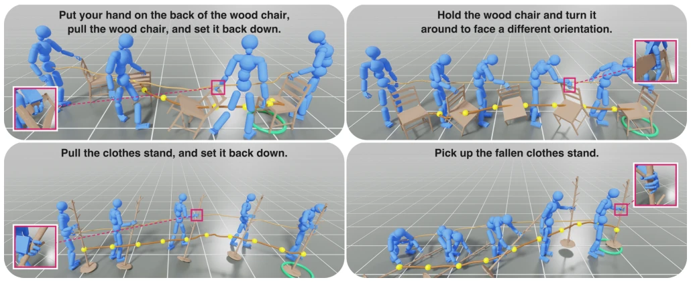
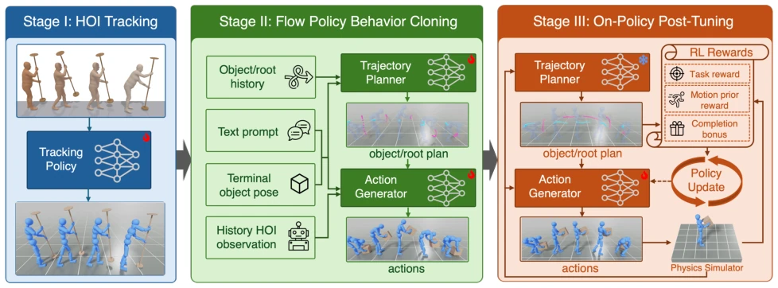
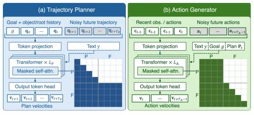
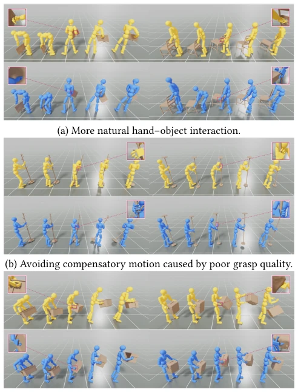
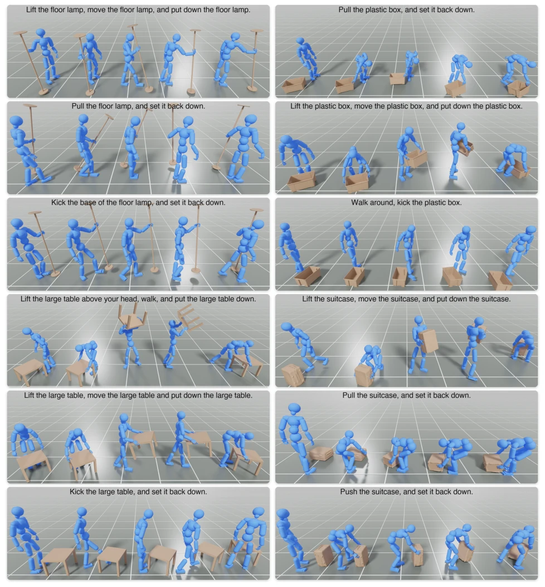
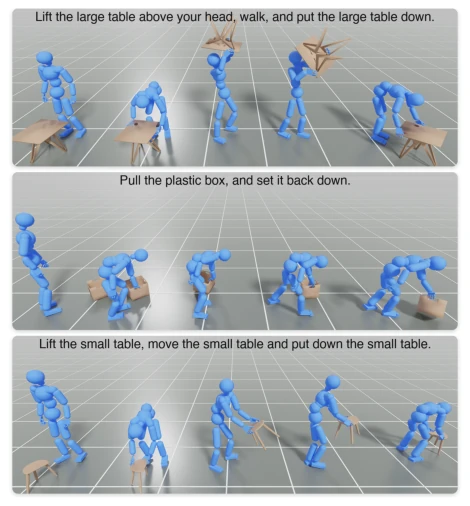
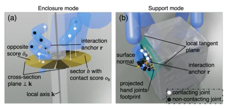
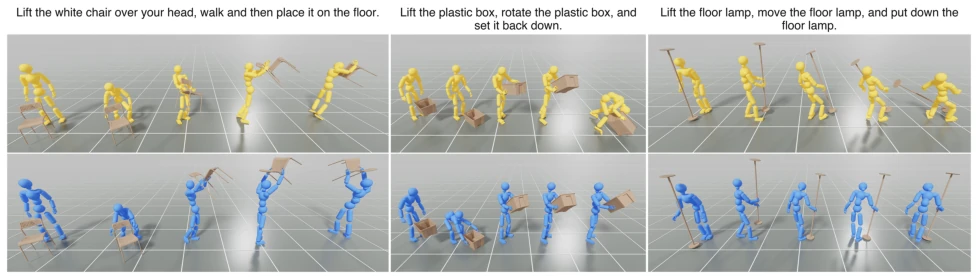
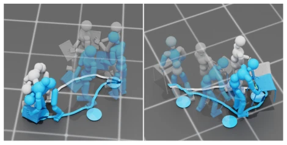
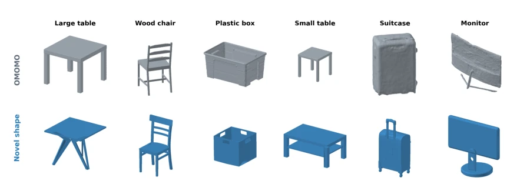

This paper attempts to drive physical simulation characters with language, which sounds promising, but physical contact often turns language instructions into "castles in the air". The highlight of LYRIC is that it does not blindly pursue end-to-end, but separates the Planner and Action Generator, the former manages the big picture, the latter handles details. Especially that geometric condition interaction reward is quite clever, knowing that thin rods need to be "wrapped", large planes need to be "supported", which is more reliable than simply imitating motion capture data. However, relying on motion capture data for expert trajectories is essentially "whitewashing" imperfect data, and the online fine-tuning of Flow Matching plus PPO is estimated to have a significant computational cost. For complex multi-step tasks, relying solely on sparse terminal goals may not be enough, but as a basic framework, it is indeed much more stable than pure kinematic planning.
研究动机Motivation
物理仿真角色的核心难点在于“语言指令”与“物理可行性”之间的鸿沟。现有工作如 InterMimic [Xu et al. 2025] 多依赖密集的运动学参考或结构化 3D 目标，但这忽略了接触动力学约束，生成的轨迹往往在物理上不可实现。特别是手 - 物接触处，动捕数据（如 OMOMO [Li et al. 2023]）的手指姿态常含噪声，导致专家轨迹质量下降。此外，仅靠语言指令和稀疏终端目标，缺乏中间步骤的中间监督，使得策略难以在接触误差下恢复。本文旨在解决这一矛盾，通过几何条件奖励修正动捕缺陷，并利用规划器提供中间监督，实现从语言到物理动作的可靠映射。
The core difficulty of physical simulation characters lies in the gap between "language instructions" and "physical feasibility". Existing work such as InterMimic [Xu et al. 2025] mostly relies on dense kinematic references or structured 3D goals, but this ignores contact dynamics constraints, and the generated trajectories are often physically unrealizable. Especially at hand-object contact points, motion capture data (such as OMOMO [Li et al. 2023]) finger poses often contain noise, leading to a decline in expert trajectory quality. Furthermore, relying solely on language instructions and sparse terminal goals, lacking intermediate supervision for intermediate steps, makes it difficult for the policy to recover under contact errors. This paper aims to resolve this contradiction by correcting motion capture defects through geometric condition rewards and utilizing the planner to provide intermediate supervision, achieving a reliable mapping from language to physical actions.

Fig. 1. Given only a text prompt and a sparse terminal object goal, our method produces physically simulated whole-body object interactions: the character approaches, grasps, carries, and places diverse objects with realistic hand contact.
The method is divided into three stages. The first stage trains the tracking policy, introducing geometric condition interaction rewards (Enclosure/Support) and gated reference tracking, relaxing hand pose constraints during contact to generate physically executable expert trajectories. The second stage constructs a factorized controller, containing a trajectory planner (predicting object/root trajectories) and a whole-body action generator (predicting joint actions), both based on Flow Matching Transformer, trained via behavior cloning. The planner provides intermediate task supervision, and the action generator is responsible for closed-loop execution. The third stage performs online policy fine-tuning (On-policy Post-tuning), freezing the planner, using planner-predicted trajectories as dense task rewards, combining PPO to optimize the action generator, enhancing recovery capability against contact errors. During deployment, only language instructions and terminal goals are needed, no tracking policy required. Specifically, Flow Matching loss is achieved through predicting velocity fields, Post-tuning adopts LoRA to reduce training costs, ensuring the policy executes stably in physical simulation. The planner refreshes trajectories every 8 steps, the action generator generates future 8 steps of actions based on the most recent 4 steps of context, achieving efficient inference.

Fig. 2. Training pipeline for LYRIC. We first train a physics-based HOI tracking expert from kinematic demonstrations. We then roll out the expert to collect physically grounded state–action trajectories and train the trajectory planner and action generator offline by behavior cloning. Finally, we freeze the planner and post-tune the action generator on policy in simulation using planner-derived plan-following rewards together with interaction, style, and terminal-placement objectives. We use to mark frozen components and \ to mark trainable components.

Fig. 6. Architectures of the trajectory planner and action generator. Gray tokens denote noisy inputs. In the attention masks, P/F denote pre- fix/future tokens, and colored/white cells indicate allowed/blocked attention; rows are queries and columns are keys.

Fig. 8. Qualitative comparison between our tracking policy and Inter- Mimic. Top: InterMimic; bottom: our stage I tracking policy. Our geometry- conditioned tracking policy produces more natural and stable interactions, while InterMimic often exhibits less suitable grasping, compensatory body motion, or failure to maintain the interaction.
Evaluated on the OMOMO dataset. On tracking tasks, the unified policy achieves a 76.5% success rate, superior to InterMimic's 53.2%. Language-driven tasks achieve a 90.3% success rate on the held-out set, significantly higher than the 74.2% kinematic planning baseline. Ablation studies show that geometric rewards and gated tracking are crucial for improving success rates. Additionally, the model supports test-time object waypoint guidance and achieves zero-shot generalization to new object shapes. Qualitative results demonstrate natural contact interaction and balance maintenance, proving the combined effect of physical simulation and language control. On the Jitter metric, LYRIC also demonstrates smoother motion quality, reducing jitter phenomena in physical simulation. In terms of time efficiency, the control loop runs at 30Hz, the simulator at 120Hz, ensuring real-time performance.

Fig. 9. Gallery of contact-rich whole-body object interactions driven by language instructions. Representative rollouts of LYRIC, with frames in each sequence ordered from left to right. See the supplementary webpage for additional video results.

Fig. 11. Zero-shot generalization to novel object shapes. Our policy successfully performs diverse interactions with novel within-category object geometries without fine-tuning.
其他图片Other Figures

Fig. 4. Geometry-conditioned grasp objectives. Enclosure rewards op- posing contacts on thin structures, while support rewards distributed con- tact on broad surfaces.

Fig. 7. Qualitative effect of on-policy post-tuning. Frames are ordered left to right; the top row shows Flow-BC and the bottom row shows Flow-BC + FT. While Flow-BC captures the intended behavior, small execution errors accumulate into unstable whole-body compensation or loss of object control, evident during overhead chair transport, box rotation, and floor-lamp relocation. On-policy post-tuning preserves balance and maintains stable object contact through these challenging phases, enabling execution to proceed toward the target placement.

Fig. 10. Representative object waypoint-guided interactions. Blue disks indicate user-specified object waypoints; blue and gray curves show the guided and unguided simulator-realized object trajectories, respectively. Guidance steers the object toward the intermediate waypoints.

Fig. 12. Original and novel object geometry. Original OMOMO meshes (top) and the exact Objaverse replacements used in selected successful videos (bottom). Each column uses the same view and scale; scale varies across categories.